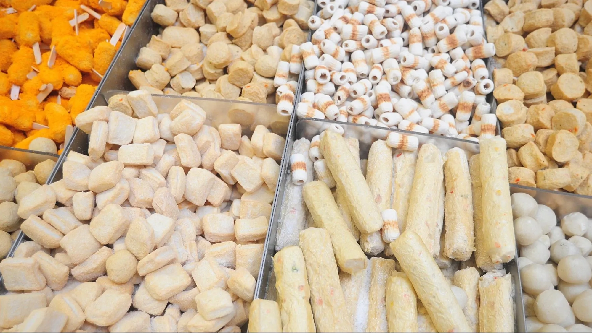
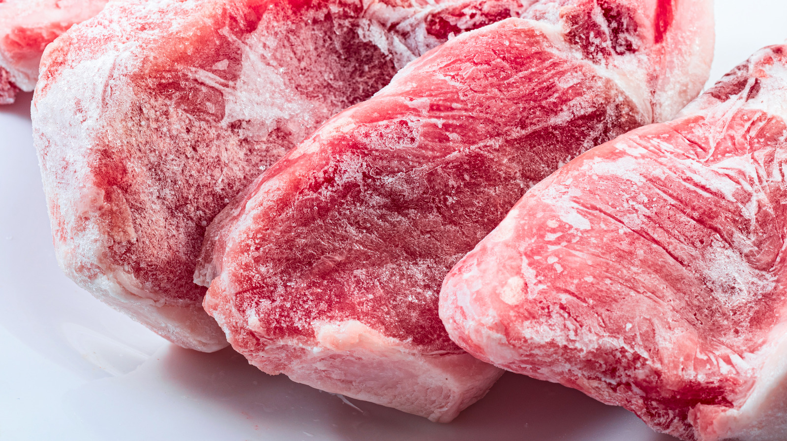
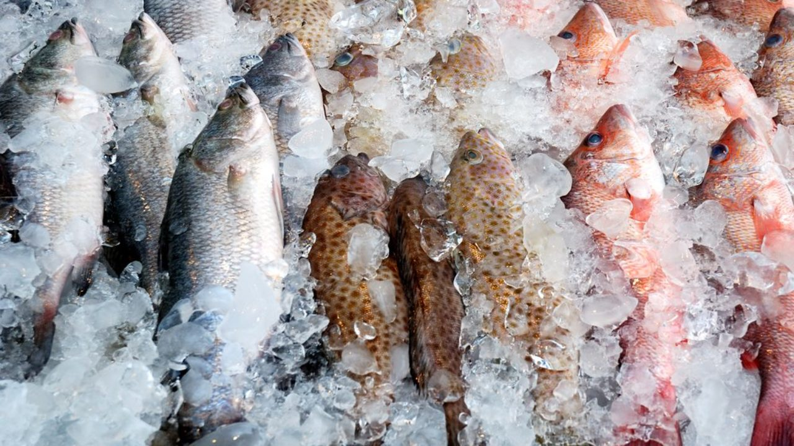
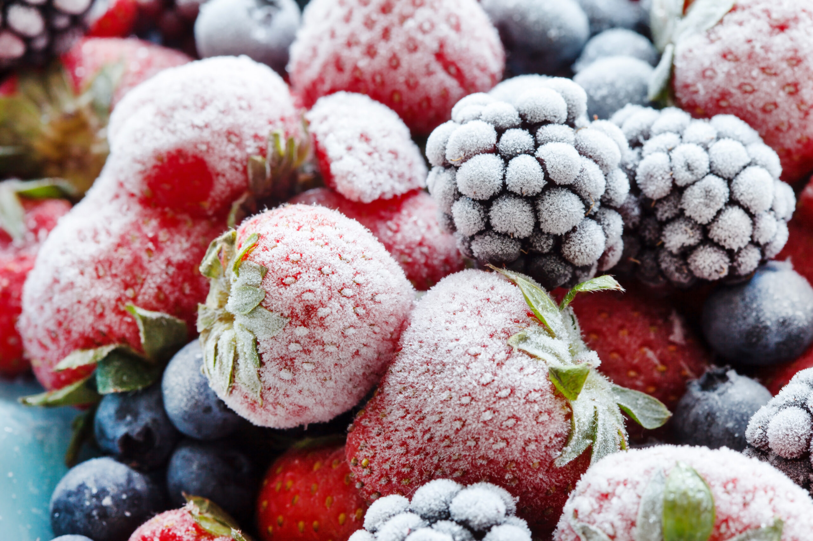
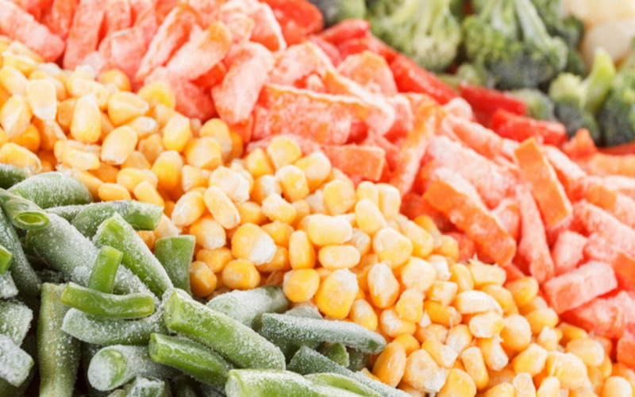
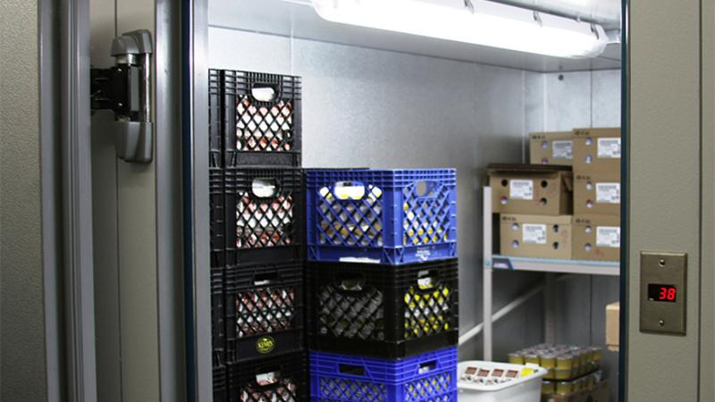

Macam Macam Jenis Produk Gudang Pendingin
Gudang untuk Frozen Food
Gudang untuk menyimpan makanan beku yang telah di proses seperti :
- Baso
- Sosis
- Chicken Nugget
- Processed Fish
Biasa digunakan oleh para Distributor Frozen Food besar di tiap daerah
Gudang untuk Frozen meat
Gudang untuk menyimpan Daging yang beku , biasa digunakan untuk di distribusi kan baik itu daging impor atau lokal
Gudang untuk Frozen Fish
Gudang untuk menyimpan Daging ikan yang beku , biasa digunakan untuk di distribusi kan baik itu untuk di export atau dijual lokal
Gudang untuk Frozen Fruit
Gudang untuk menyimpan Buah buahan , biasa digunakan para penjual buah import di pasar buah. biasa juga digunakan untuk para exporter buah
Gudang untuk Frozen Vegetable
Gudang untuk menyimpan Sayur mayur , biasa digunakan para penjual buah import di pasar. biasa juga digunakan untuk para exporter Sayur
Gudang untuk Walk in Coldroom Restaurant
Gudang untuk menyimpan Stok bahan dalam restaurant , dan sering dibuka tutup karena dipake secara intens di restaurant